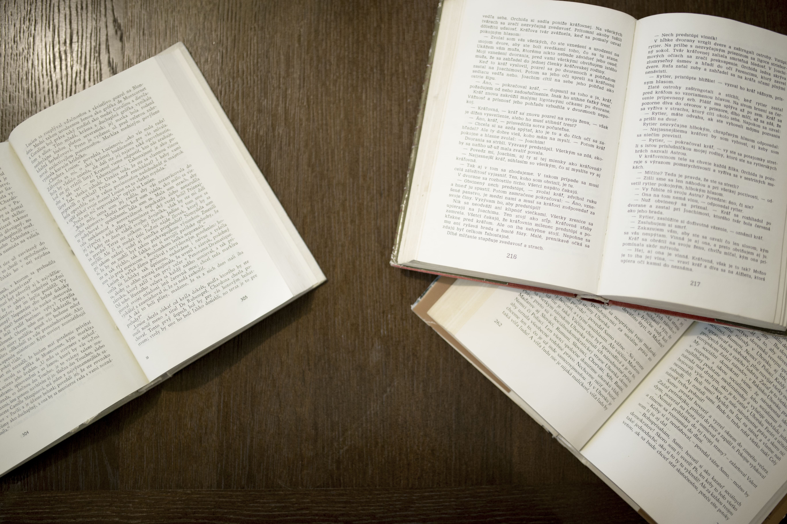
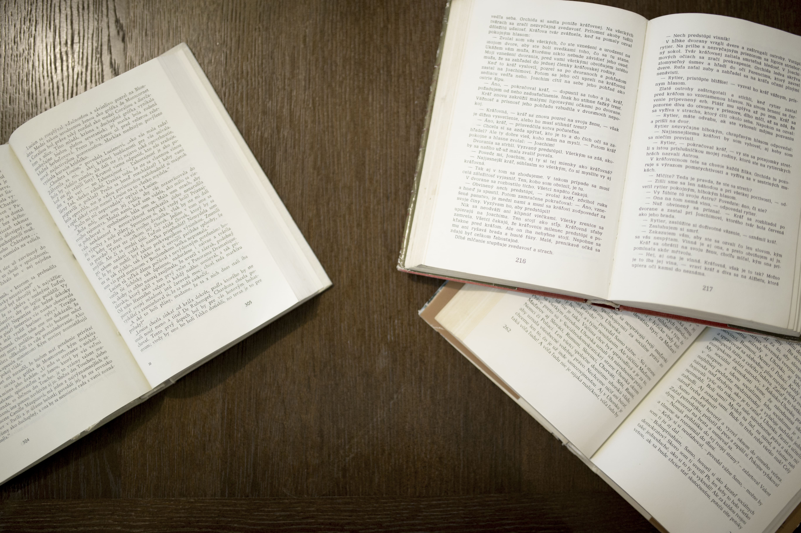
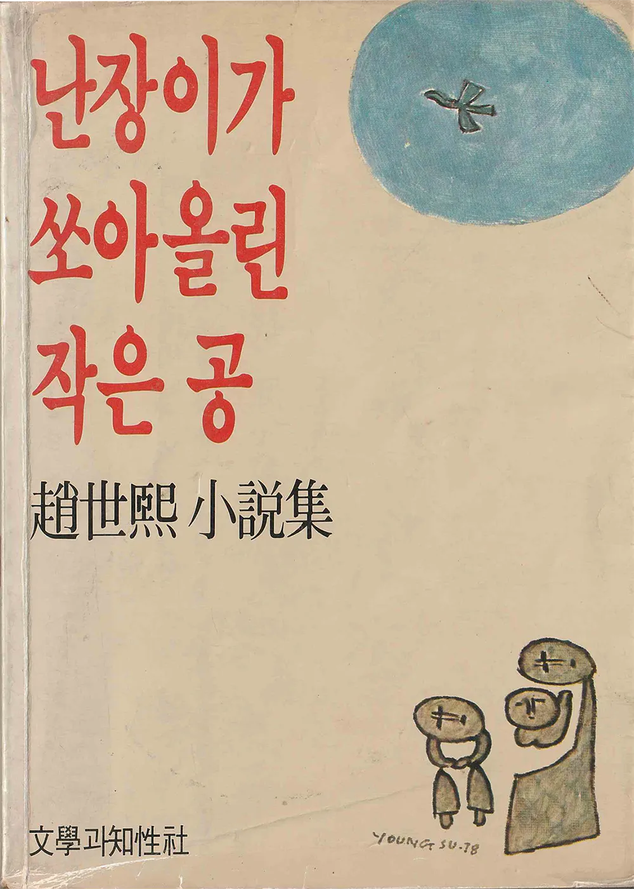
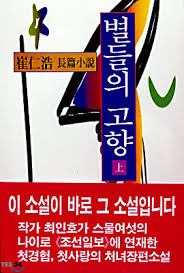
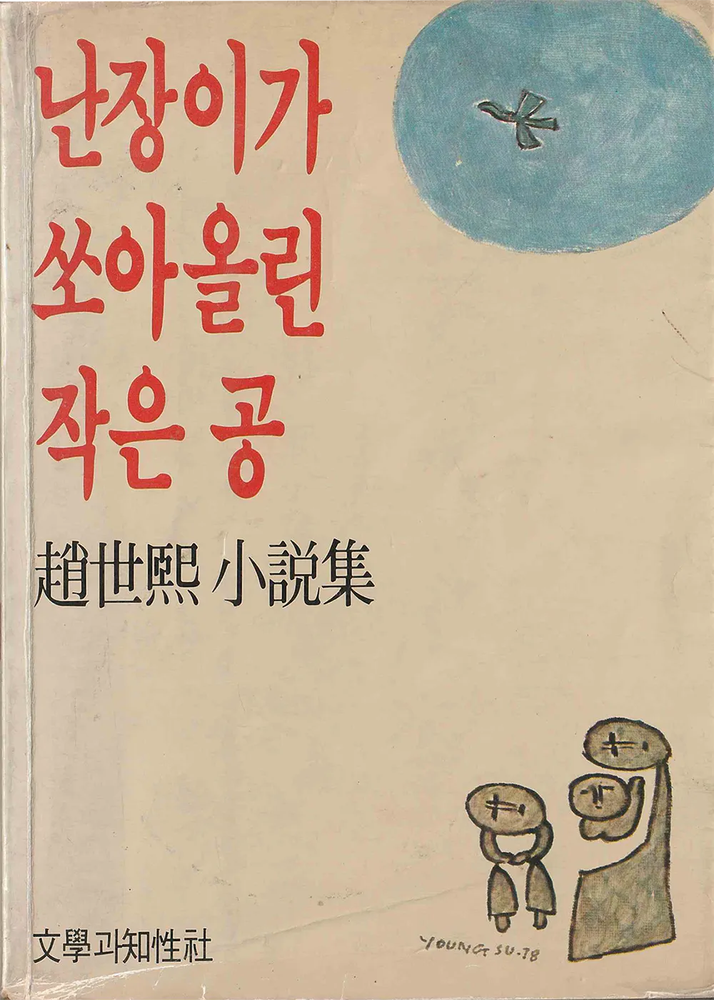
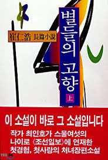

운동으로서의 출판,
저항으로서의 독서
과도기의 독서문화,
신자유주의의 물결
‘책 안 읽는 국민’ 혹은 ‘책 없는 시대’의 책 읽기 등
독서의
세대가 점점 감소하는 추세
남북통일 문제, 노동자 문제 등 당시로써는
공산주의자로
몰리기 쉬운 논쟁에서부터
시, 소설 등 문학작품까지 폭넓은
분야의 글들로
식자층으로부터 폭넓은 인기를 크게
끌었다
1950~ 1970 발행, 월간 시사잡지
주인공의 방황과 비극적 선택을 통해
통일에 대한 열망, 인간성
회복의 필요성을
담아내고, 터부시되었던 남·북한의 대립을
정면으로
파헤친 관념적 경향이 짙은
한국 소설이다
최인훈(1960), 《새벽》 11월 호 연재
‘인간시장’이라 지칭되는 인신매매 본거지를
중심으로 이 사회의
모순을 폭로한다.
사회의 모순된 구조를 은유적으로 드러내는
‘인간시장’의 부조리한 측면과 이에 대응하는 좌충우돌식 접근법,
정치사회적으로 암울했던 1980년대 시대적 울분을 드러내며 독자들로
하여금 대리만족을 시켜주는 일종의
히어로 역할을 수행해
주었다.
70년대 도시 재개발로 밀려나버린
서민 가정의
고통을 그려낸 작품이다.한국의 급격한 산업화 속에서 노동자와
도시 하층민이 겪은 극심한 빈부격차와소외를 직접적으로
묘사했다.
국내 베스트셀러
<채식주의자>,<작별하지 않는다>
2024년 노벨문학상
수상 한강 작가의 대표작!
“인생은 탐구하면서 살아가는 것이 아니라, 살아가면서 탐구하는
것이다.
실수는 되풀이된다. 그것이 인생이다…….” 양귀자 작가의
1998년 베스트셀러!
<어른의 어휘력>, <감정 어휘>
어휘력 도서 최다 판매
유선경 작가의 첫 필사책!
그림과 비밀, 그리고 슬픔으로 서로 밀착되는 세 아이의 이야기
<두근두근
내인생> 김애란, 13년 만의 신작 장편소설!
1960s
1970s
1990s
2010s
2020s
무슨 장르를
재밌게
읽었을까
한국인이 선호한 독서 장르는 시대적 흐름과 사회적 관심사에 따라
다양하게 변화했다.
팬
데믹 시기에는 마음의 위안을 주는 에세이와 힐링 소설이 큰 인기를
끌었으며, 경제적 불확실성 속에서 자기계발서와 심리학 서적도
주목받았다.
웹
소설과 같은 디지털 장르 문학이 폭발적인 성장을 보이며 로맨스,
판타지, 무협 등이 널리 소비되었고, 환경, 젠더, 사회 등을 다룬
논픽션도 독자들의 관심을 끌었다.
또한 학습과 재미를 동시에 충족시키는 아동 및 청소년 도서가 부모와
교사들 사이에서 꾸준히 사랑받으며 주요 독서 장르로 자리 잡게
되었다.
독서정산

1945년부터 문학의 바람이 화려하게 날리던 과거와 다르게, 2024년
현재 대한민국의 독서 실태는 사회적 변화와 디지털 기술의 발달
속에서 새로운 국면을 맞이하고 있다.
한
국인의 독서 생태는 문화, 경제, 사회적 변화에 따라 꾸준히 진화해
왔고. 현재 한국 사회에서 독서는 여가 활동, 학습, 자기 계발의
중요한 수단으로 자리 잡고 있지만, 디지털 콘텐츠의 증가와 바쁜
현대인의 라이프스타일로 인해 독서 습관에는 변화가 생기고 있다.
독서의 목적과 선호하는 책의 종류에도 변화가 나타났다.
전
자책과 오디오북은 바쁜 현대인에게 새로운 독서 방식을 제시하며
점차 인기를 얻고 있고, 짧고 간결한 정보를 제공하는 블로그나 소셜
미디어 콘텐츠도 독서의 한 형태로 자리 잡고 있다. 하지만 이러한
디지털 독서의 확산은 종이책 중심의 전통적 독서 문화에 변화를
일으키고 있었다.
세
대별로 독서 습관에는 차이가 있는데, 청소년은 웹소설과 웹툰 같은
디지털 콘텐츠에 익숙하며, 중장년층은 여전히 종이책을 선호하는
경향이 강하다. 이처럼 디지털과 전통 매체가 공존하는 가운데, 독서의
중요성은 여전히 강조되고 있으며, 이를 바탕으로 독서 문화를
발전시키기 위한 노력은 지속되고 있다.
일제시대 식민지 청산과
한국전쟁기 속 남북의
혼돈스런
독서지식
산업화 시대 속
저류에 흐르고 있던
저항의 독서문화
한국 현대 독서문화 형성 역사

세상의 중심이 ‘나’로 재편되며
불어닥친 자기계발의 열풍,
‘상실의
시대’의 후일담 문학
새로운 진보 담론의 등장
현대화와 여성의 자아실현 욕구가
충돌하며 보수적 윤리관과
새로운
가치관이 대립하던
당시를 보여주었다
산업화 과정 속 병폐와 참된 사랑이 결여된
인간의 소외,
개인만 위해 줄달음치는 현대의 상황을
신선한 문장과 날카로운
감성으로 형상화한 소설.
도시 속 방황하는 젊은이들의 삶을
통해
당시 사회의 물질주의와 정체성 혼란을
비판적으로
조명하였다.


저자 한강, 2014-05-19, 《창비》
『소년이 온다』는 ‘상처의 구조에 대한 투시와 천착의 서사’를
통해 한강만이 풀어낼 수 있는 방식으로 1980년 5월을 새롭게
조명하며, 무고한 영혼들의 말을 대신 전하는 듯한 진심 어린
문장들로 5·18 이후를 살고 있는 우리에게 묵직한 질문을
던진다.
이 작품은 가장 한국적인 서사로 세계를 사로잡은
한강 문학의 지향점을 보여준다. 인간의 잔혹함과 위대함을 동시에
증언하는 충일한 서사는 이렇듯 시공간의 한계를 넘어 인간역사의
보편성을 보여주며 훼손되지 말아야 할 인간성을 절박하게
복원한다.
저자 양귀자, 1998-07-04,《살림》
『모순』은 스물다섯 살 미혼여성 안진진을 통해 모순으로 가득한
우리의 인생을 들여다본다. 작가 특유의 섬세한 문장들로 여러
인물들의 삶을 생생하게 그려내고 있다.
이 작품이 출간된 지
15년, 모순으로 얽힌 삶은 여전히 어렵기만 하지만 인생을 그냥
흘려보내고 있는 많은 사람들에게 새롭게 인생을 돌아보는 계기를
마련해준다. 일상의 지극히 사소한 에피소드들을 선별해 들려주며,
인생은 그냥 받아들이는 것이 아니라 탐구하면서 살아야 하는
것임을 이야기한다.
저자 유선경, 2024-03-28,《위즈덤하우스》
『소년이 온다』는 ‘상처의 구조에 대한 투시와 천착의 서사’를
통해 한강만이 풀어낼 수 있는 방식으로 1980년 5월을 새롭게
조명하며, 무고한 영혼들의 말을 대신 전하는 듯한 진심 어린
문장들로 5·18 이후를 살고 있는 우리에게 묵직한 질문을
던진다.
이 작품은 가장 한국적인 서사로 세계를 사로잡은
한강 문학의 지향점을 보여준다. 인간의 잔혹함과 위대함을 동시에
증언하는 충일한 서사는 이렇듯 시공간의 한계를 넘어 인간역사의
보편성을 보여주며 훼손되지 말아야 할 인간성을 절박하게
복원한다.

저자 김애란, 2014-08-27,《문학동네》
『모순』은 스물다섯 살 미혼여성 안진진을 통해 모순으로 가득한
우리의 인생을 들여다본다. 작가 특유의 섬세한 문장들로 여러
인물들의 삶을 생생하게 그려내고 있다.
이 작품이 출간된 지
15년, 모순으로 얽힌 삶은 여전히 어렵기만 하지만 인생을 그냥
흘려보내고 있는 많은 사람들에게 새롭게 인생을 돌아보는 계기를
마련해준다. 일상의 지극히 사소한 에피소드들을 선별해 들려주며,
인생은 그냥 받아들이는 것이 아니라 탐구하면서 살아야 하는
것임을 이야기한다.


예술
사회

남녀 연령대 별 평균 독서율


책읽기를 주요시함
독서 자체가 개인적 성장과
사회적 교양의 상징이었음
예전에는 사람간의 자아성찰의
중요한 수단로 여겨졌음
미디어&엔터테인먼트의 급격한 다각화로
여가활동에서
우선순위를 잃음
독서의 형태가 웹소설, 오디오북 등으로
다양화되며 그 본질적
역할도 변화함
입시 위주 학습과 디지털 콘텐츠가
이를 대체하며 독서의 비중이
줄어듦
성인의 독서율은 점점 낮아지고 있지만, 학생들의 독서율과 독서량은 꾸준히 유지되거나 증가하고 있어 세대 간의 큰 격차가 드러난다. 이런 결과는 독서 시간이 부족하거나 디지털 매체에 수많은 시간을 할애하는 현대인의 생활방식 변화와 연결되어 있다. 1970년대는 산업화와 도시화가 가속화되던 시기로, 독서는 지식 습득과 사회적 계층 이동을 위한 중요한 도구로 여겨졌다. 당시 서점과 도서관이 번성하고 대중소설과 교양서적이 인기를 끌며 독서문화가 활발했다. 그러나 디지털화가 주도하는 현대 사회에서 스마트폰과 온라인 미디어가 독서의 대체재로 자리 잡으면서 전통적인 독서량은 감소했다. 특히 종이책 중심의 독서가 줄어들며 청소년과 성인의 독서율도 전반적으로 낮아졌다.
해당 독서 실태조사에 따르면, 연령대와 성별에 따른 독서율의 차이가
유의미하게 나타난다.
성인의 경우, 남성과 여성 모두에서
독서율이 감소하는 경향을 보였으나, 여성의 독서율이 대체로 남성보다
높은 경향을 보인다.
독서 습관과 선호 장르에서 뚜렷한 차이를 보입니다. 청소년기에는
남녀 모두 독서율이 상대적으로 높지만, 20대 이후 남성의 독서율은
급격히 감소하고, 여성은 성인이 되어도 독서를 꾸준히 유지하는
경향이 있다. 중년 이후에는 여성의 독서율이 남성을 크게 앞지르며,
이는 여성들이 자기계발서, 에세이, 로맨스 등 다양한 장르에 관심을
가지는 반면 남성은 경제, 정치, 역사 등 제한된 분야를 선호하는 데
기인한다. 노년층에서는 성별 구분 없이 독서율이 낮아지는 경향이
있지만, 독서 동호회나 취미 활동과 연계된 경우 여성의 참여가 더
활발하다.
결
국 연령이 증가할수록 독서율은 감소하지만, 여성은 남성보다 폭넓은
관심사와 꾸준한 독서 습관을 유지하는 경향이 있다.
 


